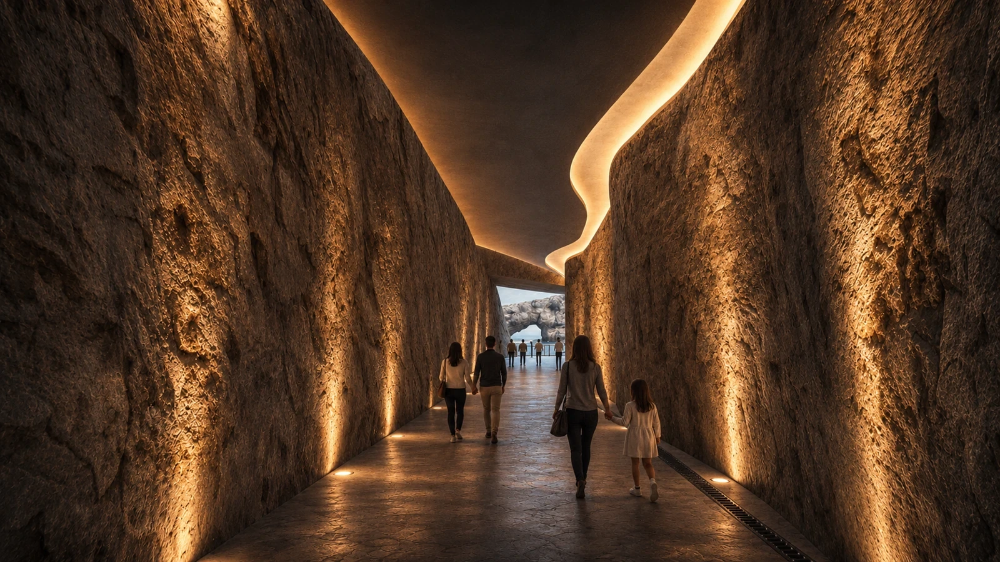
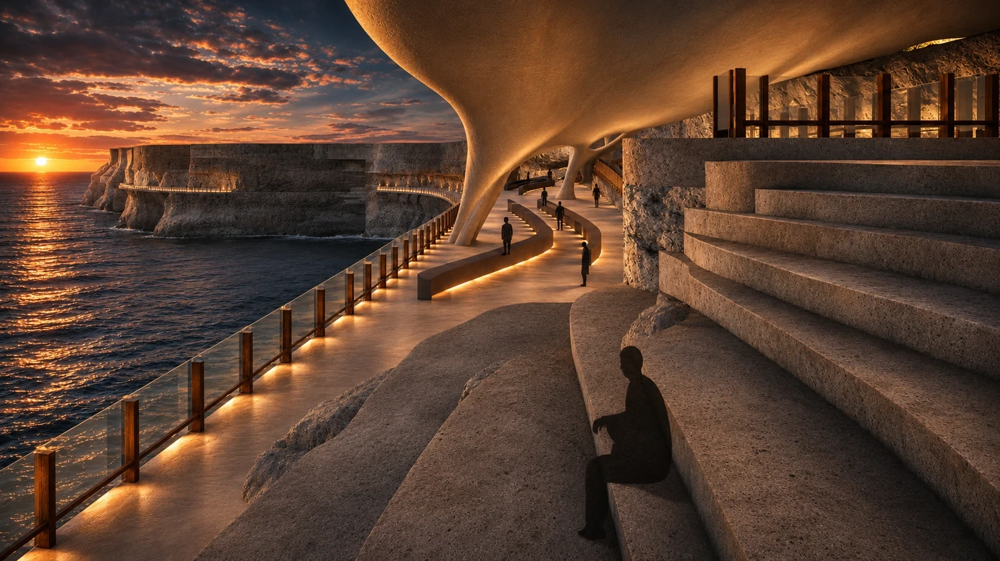

Twelve Apostles Visitor Centre
A building and a journey through the coast.



A building and a journey through the coast.
A visitor centre embedded in the cliff and a walkway connecting lookouts and the beach. Geological research and hand sketches inform a sequence of carved spaces, framed views, ramps, places to pause and openings to daylight.
Connect visitors to the coastal landscape while giving interpretation, movement and rest distinct spatial roles.
A clear idea.
Spatial consequences.
Refine the early continuous experience-centre idea into two connected elements: a concentrated visitor centre and a landscape walkway.
The source statement explicitly records this change. Route studies, hand sketches, form models and final sections explain the resulting scheme.
The drawing room.
Plans and sections reveal
what an image can't.
The source drawing develops roof openings and carved interior relationships.
Original plan / not to scale.
Original long sections explain levels and relation to the coast.
From the inside.
Material, light and the
scale of occupation.
Project context and image notes
RMIT studio / Group 5. The split between building and walkway is documented in the source statement. The new process strip simplifies that decision; it is not a measured site or access drawing.
Images marked AI-assisted are presentation studies. Original drawings remain the reference for dimensions, labels and geometry.